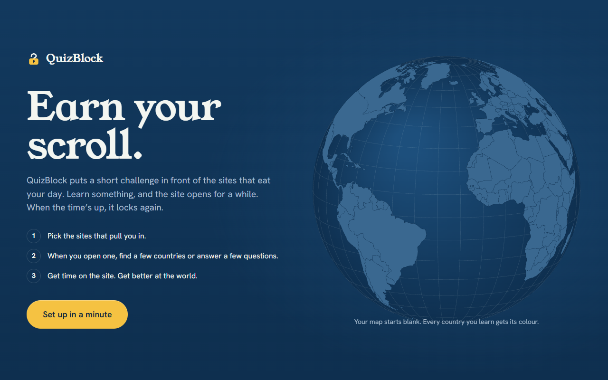
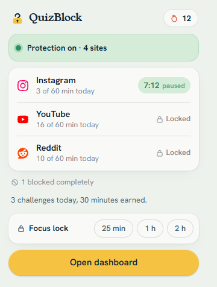

On this page
This guide takes you from installing QuizBlock to your first gated visit, then shows where the toolbar popup and the dashboard fit in. Setup takes about a minute.
Install QuizBlock
- Open the store page. Go to QuizBlock on the Chrome Web Store.
- Add it. Click Add to Chrome, then Add extension.
- Pin it. Open Chrome’s Extensions menu (the puzzle-piece icon) and pin QuizBlock, so its countdown and popup stay in view.
QuizBlock also works in Microsoft Edge and Brave, installed from the same page. In Edge, you’ll first need to allow extensions from other stores.
Set it up
The welcome page opens by itself once QuizBlock is installed. Click Set up in a minute and go through four short steps. You can change all of it later.

- Sites. Choose the sites that pull you in. Instagram and YouTube are picked to start with; click any site to add or remove it. A pack such as Social, Shorts & Reels or News adds a whole group, and the box below takes any address, like
news.example.comoryoutube.com/shorts. - Strictness. Pick Gentle, Balanced or Strict (Balanced is recommended), then the Free minutes each day, per site: None, 5, 10, 15 or 20. Free minutes let your first few minutes on each site open without a challenge.
- Interests. Map challenges are always included. Pick at least one subject for quizzes (Geography, History and Science are picked to start with) and your level: Starting out, Know a fair bit or Bring it on.
- Permission. Click Allow access and finish, then Allow when Chrome asks.
Chrome’s prompt asks whether QuizBlock can “read and change your data on all websites”. QuizBlock asks for every site once, so adding a site later never brings the prompt back. It only acts on the sites on your list: every other site is left alone, and nothing leaves your browser. The privacy policy has the details.
If you already use QuizBlock on another computer with settings sync on, the welcome page says Welcome back. and offers to use those settings here. See backups and sync.
Try your first challenge
The last screen, You’re set., lists the sites you gated.
- With free minutes, opening a site straight away would simply show the site, so See a challenge now opens a preview of its gate instead. Click Try the challenge to see how one works. Nothing is saved and no time is used.
- With no free minutes, Try it: open instagram.com (or whichever site comes first) takes you to the real gate.
If you closed the welcome page before the end, the toolbar popup and the dashboard offer Finish setting up.
Your first gated visit
Each day, your first minutes on a site come out of its free minutes, counting down on the QuizBlock toolbar icon. Once they’re used, opening the site takes you to the gate instead.

- Read the offer. The gate shows the challenge picked for you, such as “Find 10 countries in Europe”, and how many minutes it earns.
- Earn your time. Click Earn 10 minutes (the number depends on your strictness) and complete the challenge.
- Go back. Click Continue to YouTube to return to the page you were opening, with the countdown on the toolbar icon.
Reloading the gate won’t change the challenge. How challenges and unlocks work covers the longer alternative, daily limits and what happens when time runs out.
The toolbar popup
Click the QuizBlock icon in the toolbar to see:
- a status line, such as “Protection on · 3 sites”, with a Fix button if something needs your attention;
- the time left on the site you’re on, with I’m done, lock it to end the session early;
- your sites, with the minutes used today and the time left, or Locked;
- a quick Focus lock, and a button to gate the site you’re on (for example Gate reddit.com) if it isn’t on your list;
- Open dashboard.

The dashboard
The dashboard is where you change things and see how you’re doing. Open it from the popup. It has six pages:
- Today: minutes earned and used, your learning streak, your sites and recent challenges.
- Week: a recap of your week, compared with the one before.
- Sites: add sites or packs, import a list, set daily limits, and switch sites off or block them completely.
- Focus: focus hours and focus locks, for times when your sites don’t open at all.
- Learning: your world map, coloured by what you know, and what’s coming back for review soon.
- Settings: strictness, free time, appearance, quiz subjects and level, and your data.
Making QuizBlock stricter always applies at once, while making it easier waits until tomorrow. Change your rules explains why.